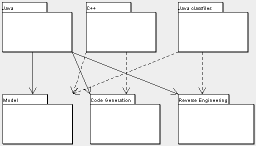

- Purpose
- Each of these is to provide support for the language in question.
- Layer
Each source language supported by ArgoUML has its own subsystem. They are each different in level of support and implementation language. All languages except for Java are in their own dedicated Tigris project with separate web site, mailing lists, source repository, etc. For example, the C++ plugin is located here.
Currently C++ has a proof of concept reverse engineering module and a more mature code generation module, although still very simple. The Java classfile module has only reverse engineering.
There are stubs/shells for many different languages, but the following are mature enough to be distributed with ArgoUML: C++ (Cpp), C# (Csharp), classfile, IDL, and PHP. Others at various stages of development include: Python, Ruby, and SQL.
